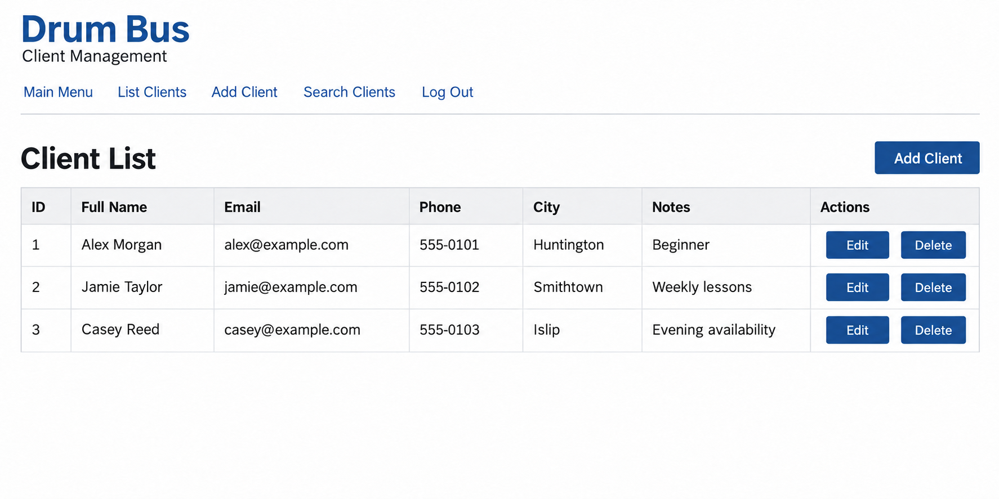
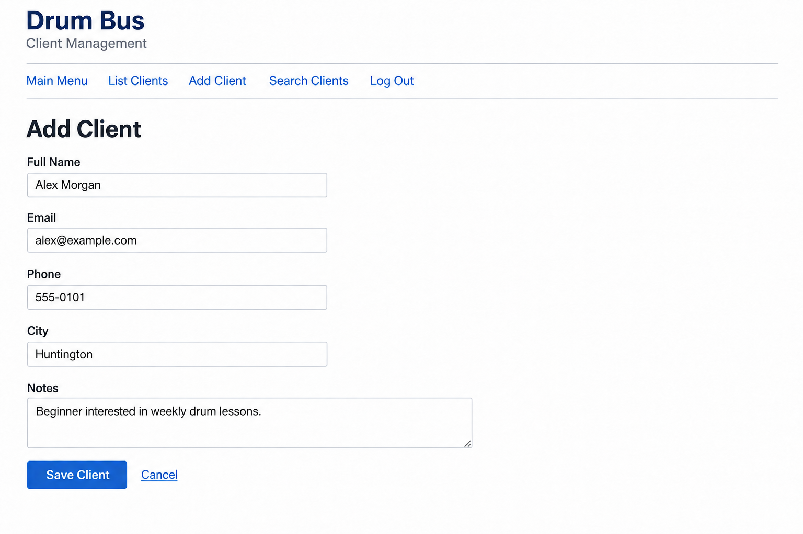

Drum Bus Client Management System
A database-driven website for managing client information for a mobile drum-lesson business.
Status: Completed
Project Type: Web Database Development Project
My Role: Application and Database Development
← Back to Selected WorkProject Overview
I completed Drum Bus for my Web Database Development coursework. The application was modeled after a friend's mobile drum-lesson business and organizes client contact information and notes in a searchable database.
Users can register an account, sign in, and manage client records through a consistent interface. The main menu connects the listing, adding, searching, updating, and deleting workflows.
My Contribution
I developed the website and its database as an individual course project. My work included authentication, database connections, client record management, input validation, and page navigation.
I used PHP and PDO to connect the interface with MySQL and handle the database operations required by each client management page.
Main Features
- List client records in an HTML table.
- Add clients with name, email, phone, city, and notes.
- Search using a selected field and a search term.
- Update existing client information.
- Confirm and delete client records.
- Register an account, sign in, and log out.
- Restrict client management pages to authenticated sessions.
Technologies
- PHP: Server-side forms, authentication, and record management.
- MySQL: Storage for client records and user accounts.
- PDO: Database connections and prepared SQL statements.
- HTML and CSS: Page structure, forms, tables, and styling.
- JavaScript: Client-side form validation.
- XAMPP and Apache: Local development environment.
Database Design
The database uses separate tables for client information and user accounts.
- clients: Stores an ID, full name, email, phone, city, notes, and creation timestamp.
- users: Stores the username, email, and hashed password used for registration and login.
Client IDs identify records for updates and deletion. A unique index on client email helps prevent duplicate email entries, while an index on city supports searches and filtering.
Authentication and Validation
Passwords are hashed before storage and verified during login. Sessions control access to the main menu and client management pages.
PDO prepared statements are used for database operations. The application includes PHP validation, JavaScript validation, and output sanitization when displaying user-provided information.
Interface Preview
Client List

The client list presents contact information and notes in a table, with actions for editing or deleting a record. The preview uses sample data.
Add Client

The add-client form collects the information stored in the client database, including contact details, city, and lesson notes.
Project Outcome
The completed application supports account access and the full client record management workflow. Users can create, view, search, update, and delete records through the website.
The project gave me experience building a PHP and MySQL application around a practical business need, with authentication, validation, and consistent navigation.